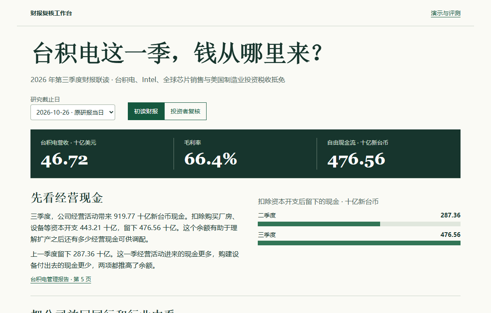

台积电 · 已核准案例
同样四个问题，保留研报页和公司披露页。通用 RAG 首测 2/4；加入已核准证据卡和报告期判断后，原题复测 4/4。
看四道真实回答台积电第三季度自由现金流增加了 189.20 十亿新台币。哪一部分来自经营改善，哪一部分来自当季少花的资本开支？打开案例，查看计算过程，再按当时可见的资料对照 Intel、行业和政策。

同样四个问题，保留研报页和公司披露页。通用 RAG 首测 2/4；加入已核准证据卡和报告期判断后，原题复测 4/4。
看四道真实回答同一行 Delivery 分别出现在营收和总预订额表中。补齐业务线与指引后，Uber 原题由 8/14 提至 14/14。换用 Airbnb 新季报盲测，查数及指引 3/14，披露判断 4/4。
切换业务指标，逐题看原答Apple 年报操作演示，从确认原页和单位，到调用计算工具、下载证据记录。
把中文费用描述转成待确认的私人草稿。查看组外付款人、重名与多笔账单的模型首轮结果，并对照改进后的同题复测。
查看账单案例与 10 道评测